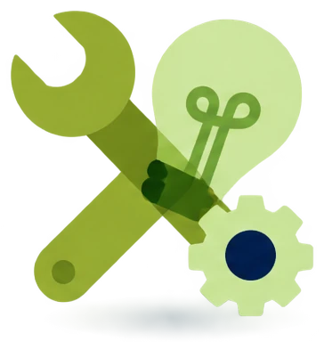

Temas
Tema 0
El examen tuCertiCyL
30 minutos · empieza aquí
Tema 1 · Área 1
Buscar y gestionar información
2 horas · 3 competenciasTema 2 · Área 2
Comunicación y colaboración
3 horas · 6 competenciasTema 3 · Área 3
Creación de contenidos
2,5 horas · 4 competenciasTema 4 · Área 4
Seguridad, bienestar y uso responsable
2,5 horas · 4 competencias
Tema 5 · Área 5
Resolución de problemas
2 horas · 4 competenciasFinal
Simulacro del examen
Demo oficial (20 preguntas) y simulacro de 63 preguntasCómo usar el curso
- Haz un tema por semana, en orden. Avanza con las flechas del teclado. La tecla B busca dentro del tema.
- Al final de cada competencia hay un Comprueba de 3 preguntas. Repítelo hasta acertar las 3.
- Tu progreso se guarda en este navegador. Usa siempre el mismo ordenador y el mismo navegador.
- Al final, haz primero la demo oficial y después el simulacro de 63 preguntas. Los dos están en Simulacro del examen. Después, apúntate al examen.
Aviso
Este curso es material no oficial: no está hecho ni revisado por la Junta de Castilla y León. Está basado en el curso «Soy competente digital: construye tu mejor versión digital», de CyL Digital (Junta de Castilla y León). CyL Digital publica sus contenidos formativos con licencia Creative Commons, uso no comercial, citando la fuente. El curso también usa la demo del examen de tuCertiCyL (Junta de Castilla y León): la demo se usa sin fines comerciales, citando la fuente.